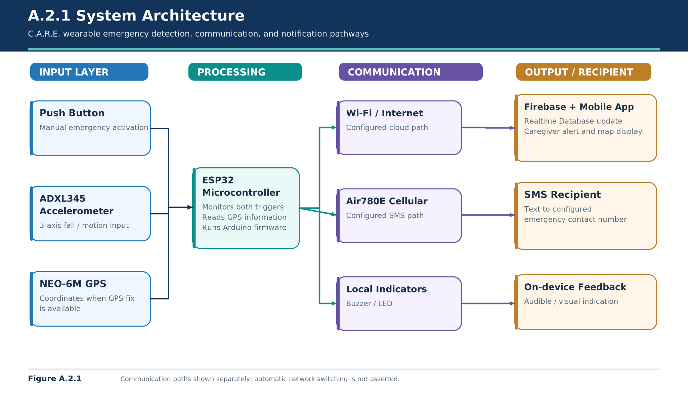
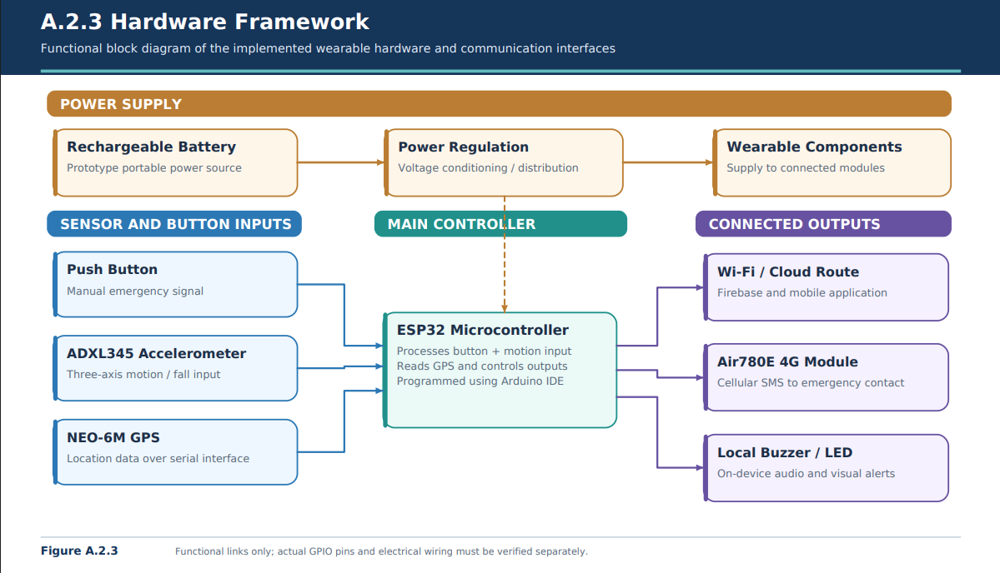
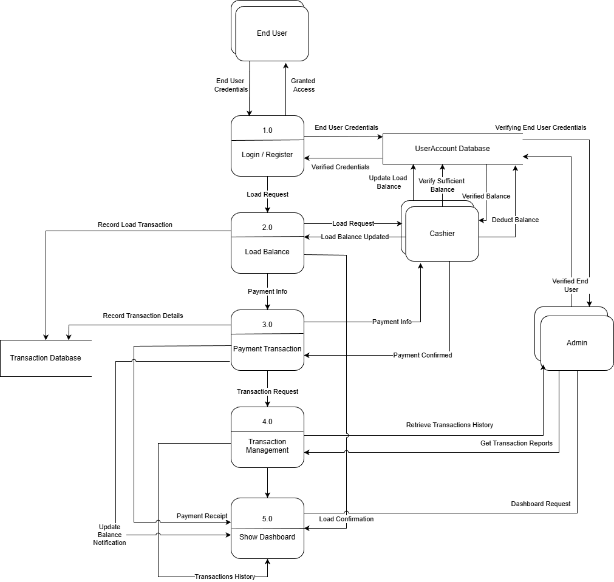
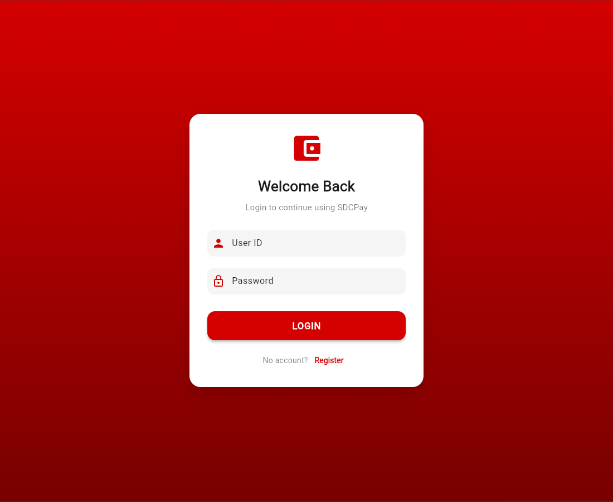

Capstone & IoT Project
C.A.R.E.
Smart Wireless IoT-Enabled Location Tracker for Rapid Emergency Intervention and Real Time Response for Elderly and Persons With Disability using Arduino Framework
C.A.R.E. combines an Arduino-compatible wearable with web and mobile applications to help elderly individuals, persons with disabilities, and other users send emergency alerts. A tactile push button and automatic fall detection provide two ways to activate an alert, with GPS location information shared through the application's cloud workflow or the configured cellular SMS route. This is both our capstone and IoT project.
- My role and contribution
- Frontend and backend programmer for the C.A.R.E. application.
- Team members
- Guinto, Rean Jericho G.
Rodriguez, John Robert A.
Sandoval, Luke Gabriel P.
Tibayan, Jericho Noel A. - Current status
- Working integrated prototype with controlled testing and research evaluation documented. Further refinement and field validation remain.
Main Objective
To design and implement a low-cost, reliable, and user-friendly Arduino-based wearable IoT emergency alert system that sends real-time emergency notifications to family members or emergency responders when the user is in danger.
Specific Objectives
- Design a wearable emergency alert device that can be easily used by elderly individuals, people with disabilities, outdoor workers, and individuals living alone.
- Implement a dual-trigger alert system that combines a manual tactile push button with automated fall detection to dispatch alerts during both conscious and incapacitated emergency scenarios.
- Integrate location tracking to capture precise GPS coordinates and transmit them alongside the emergency alert.
- Create a mobile communication system that dispatches real-time distress notifications and location updates through the C.A.R.E. application to family members and emergency contacts.
- Provide a cost-effective alternative to existing commercial wearable emergency devices.
- Evaluate the functionality, reliability, and response time of the proposed emergency alert system.
Technologies & Components
- Wearable hardware: ESP32 microcontroller, NEO-6M GPS module, ADXL345 three-axis accelerometer, Air780E 4G cellular module, tactile push button, and rechargeable battery.
- Firmware: Arduino framework and Arduino IDE.
- Applications: Next.js web management interface and React Expo mobile application.
- Cloud and maps: Firebase Realtime Database, Google Maps API, and JSON data exchange.
- Communication: Wi-Fi cloud synchronization and cellular SMS communication.
The documented application includes login and registration, a dashboard, emergency-contact and group management, and a location tracker.
Project Output & Preliminary Results
The research documents an integrated wearable and companion application prototype. In controlled observations, the team reported:
- Emergency alerts in all 15 simulated-fall trials: five forward, five sideward, and five backward falls.
- Approximately 2–5 seconds from a recognized trigger to an alert when a usable GPS fix and communication were already available. Initial GPS acquisition was excluded, and per-trial timing logs were not supplied.
- Displayed locations approximately 5–10 meters from a Google Maps reference under the observed conditions, plus delivery of an SMS to the configured recipient.
Survey evaluations were favorable, with mean ratings of 4.46/5 from 155 end users and 4.41/5 from 38 IT experts. These ratings describe participant perceptions.
The observations are preliminary: they do not establish general fall-detection accuracy, a guaranteed alert time, long-term battery endurance, automatic network failover, or integration with official emergency dispatch services.
Project Evidence


View the capstone diagram excerpt (PDF, source pages 33 and 35)
Third-Year Course Projects
A Card Payment System: Improving Digital Transfers at SDCA
SDCPay is an academic card-payment prototype for St. Dominic College of Asia's canteen, business center, and campus store. It brings account access, reloadable balances, payments, and transaction records into one application, with the goal of reducing queues and cash handling.
- My role and contribution
- Frontend and backend programmer for the card payment system.
- Team members
- Guinto, Rean Jericho G.
Rodriguez, John Robert A.
Sandoval, Luke Gabriel P.
Tibayan, Jericho Noel A. - Current status
- Working academic prototype with documented interfaces. Formal test cases are recorded as active or pending in the research paper.
Project Objectives
- Reduce waiting times and cash handling in campus payment transactions.
- Provide card-based payments, balance loading, and accurate transaction records for monitoring and accountability.
- Evaluate transaction accuracy, reliability, and performance during peak hours.
- Assess user acceptance, ease of use, and perceived security.
Technologies Used
- Frontend: Flutter and Dart.
- Backend: Node.js and Express APIs.
- Database: MongoDB, with MongoDB Atlas and Compass documented as development tools.
- Development tools: Visual Studio Code, Bruno for API testing, and Git/GitHub for version control.
- Card workflow: RFID/card-reader integration, with manual card-ID entry supported by the prototype.
Documented Output & Features
The paper includes interfaces for login and registration, account balances and loading, payments, transaction history, cashier operations, admin user and role management, card activation, and daily reports.
GCash/Maya loading is simulated in the prototype. The documented test cases do not establish completed validation, live payment-provider integration, or measured reductions in transaction or waiting times.
Project Evidence


View the process and data-model excerpt (PDF, source pages 37 and 42)